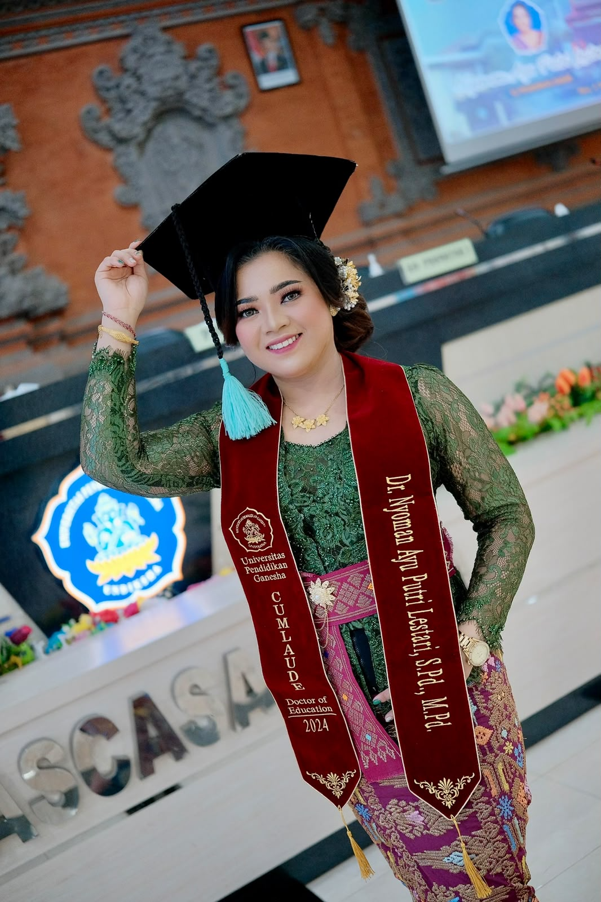
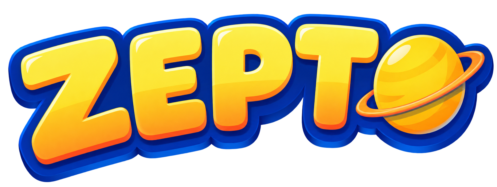
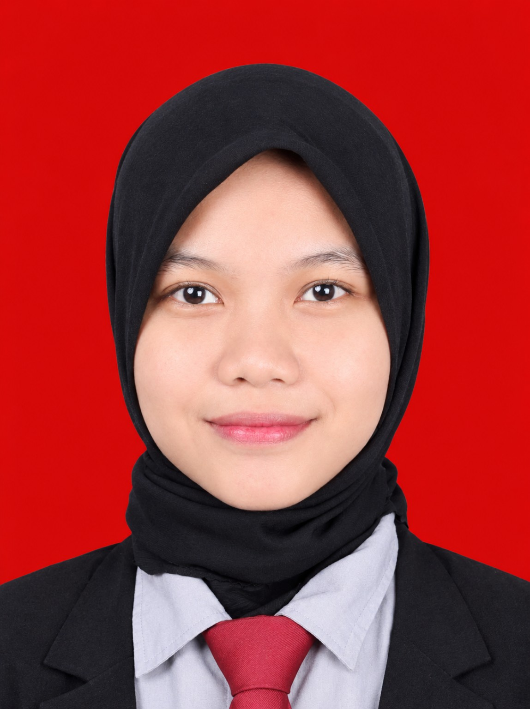

Dosen Pembimbing I

Dr. Nyoman Ayu Putri Lestari, S.Pd., M.Pd.
NIDN: 0827049401

Menyiapkan roketmu...
Ukuran, jarak, dan waktu disederhanakan.
Panduan singkat untuk memulai petualanganmu
Sentuh planet untuk mendekat dan membaca kartu faktanya. Gunakan bar kontrol untuk mengatur kecepatan orbit.
Selesaikan misi belajar singkat untuk mendapatkan lencana di Paspor Astronaut-mu.
Mainkan kuis, permainan mencocokkan, dan susun planet untuk menguji pengetahuanmu.
Amati simulasi gerhana, siang-malam, dan bandingkan ukuran planet.
Lihat semua progres belajarmu: stempel planet, lencana, dan riwayat kuis.
Perubahan yang Anda simpan hanya berlaku di perangkat ini.
ZEPTO · PROFIL AKADEMIK
Dosen Pembimbing I

NIDN: 0827049401
Dosen Pembimbing II
Foto menyusul
Nama dan NIDN akan ditambahkan setelah tersedia.

Pembuat Media Pembelajaran ZEPTO
Media pembelajaran interaktif Tata Surya untuk siswa kelas IV SD. Belajar melalui materi, eksplorasi 3D, misi, simulasi, permainan, dan evaluasi.
PENGEMBANGAN APLIKASI ZEPTO UNTUK MENINGKATKAN HASIL BELAJAR MATERI TATA SURYA SISWA KELAS VI
Aplikasi ini dibangun menggunakan THREE.js, Vite & Capacitor, sebagai media pembelajaran tata surya interaktif untuk siswa Sekolah Dasar.